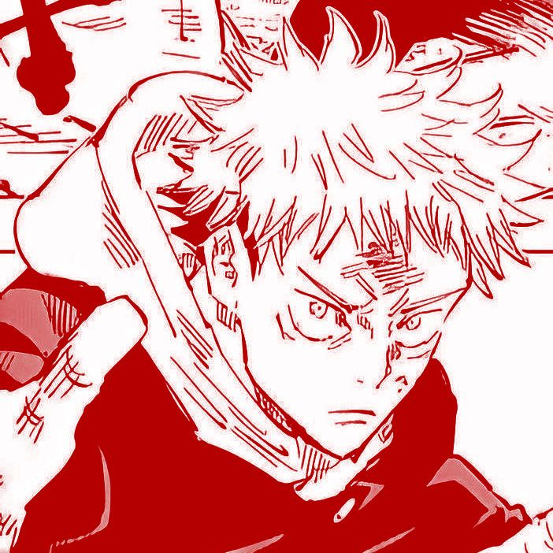

Bem-vindo ao sistema
Jujutsu Kaisen tem vários personagens interessantes, cada um com suas peculiaridades, e a história é muito envolvente, tem um ótimo desenvolvimento, e o final do anime é muito bom, sem contar que tem uma ótima animação. Só quero te mostrar um pouco sobre alguns personagens do anime Jujutsu Kaisen e minha opinião sobre eles, espero que goste!